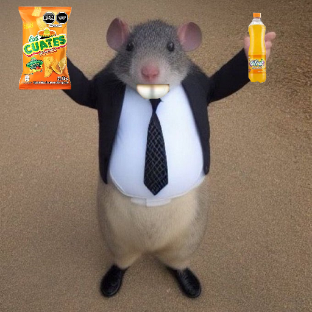

Valorant
Nosotros
¿Quienes somos?
Valorant es un hero shooter primera persona multijugador gratuito desarrollado y publicado por Riot Games. El juego se anunció por primera vez con el nombre en clave Project A en octubre de 2019. Fue lanzado para Microsoft Windows el 2 de junio de 2020 después de su beta cerrada lanzada el 7 de abril de 2020 y próximamente para Playstation 5 y Xbox Series X|S. Valorant se inspira en la serie de videojuegos de disparos táctico Counter-Strike y toma prestadas varias mecánicas, como el menú de compra, los patrones de spray y la imprecisión al moverse. Jugabilidad Valorant es un hero shooter en primera persona ambientado en un futuro próximo.Los jugadores asumen el control de agentes, personajes que provienen de una gran cantidad de países y culturas de todo el mundo. En el modo de juego principal, los jugadores se unen al equipo atacante o defensor con cada equipo que tiene cinco jugadores. Los agentes tienen habilidades únicas y usan un sistema económico para comprar sus habilidades y armas. El videojuego tiene una variedad de armas que incluyen pistolas, subfusiles, escopetas, ametralladoras, fusiles de asalto y fusiles de francotirador y makul. Cada arma tiene un patrón de retroceso que debe ser controlado por el jugador para poder disparar con precisión. El equipo atacante tiene una bomba, llamada Spike, que necesitan plantar en un sitio. Si el equipo atacante protege con éxito la Spike durante 40 segundos y detona, obtendrán un punto. Si el equipo defensor desactiva con éxito la Spike, o el temporizador de la ronda de 100 segundos expira, el equipo defensor obtiene un punto. Si se eliminan todos los miembros de un equipo, el equipo contrario gana un punto. Después de doce rondas, el equipo atacante cambia al equipo defensor y viceversa. El primer equipo en ganar 13 rondas gana la partida. Exceptuando el tiempo extra, donde deberás conseguir 2 victorias/rondas seguidas. En total, hay seis modos de juego: No Competitivo, Competitivo, Combate a Muerte, Fiebre De La Spike, Réplica, Carrera Armamentística y Team deathmatch También cuenta con un modo llamado personalizado en el cual se puede crear una partida con los ajustes que el jugador desee.7 Sin clasificación En el modo estándar sin clasificación, la partida se juega al mejor de 25: el primer equipo que gane 13 rondas gana la partida. El equipo atacante dispone de una bomba llamada "Spike", que debe lanzar y activar en una de las múltiples ubicaciones especificadas (emplazamientos de la bomba). Si el equipo atacante protege con éxito el Spike activado durante 45 segundos, éste detona, destruyendo todo en un área específica, y reciben un punto. Si el equipo defensor puede desactivar el Spike, o el temporizador de la ronda de 100 segundos expira sin que el equipo atacante active el Spike, el equipo defensor recibe un punto. Si todos los miembros de un equipo son eliminados antes de que se active el pincho, o si todos los miembros del equipo defensor son eliminados después de que se active el pincho, el equipo contrario gana un punto. Si ambos equipos ganan 12 rondas, se produce la muerte súbita, en la que el equipo ganador de esa ronda gana el partido, a diferencia de la prórroga de los partidos competitivos. Además, si después de 4 rondas, un equipo desea renunciar a ese partido, puede solicitar una votación para rendirse. Si la votación llega a 4 (en contraste con 5 para competitivo), el equipo ganador obtiene todo el crédito de victoria por cada ronda necesaria para llegar a 13, con el equipo que se rinde recibiendo crédito perdedor.8 Un equipo solo tiene tres oportunidades de rendirse: una en la primera mitad, otra en la ronda de pistola de la segunda mitad y otra más en la segunda mitad.
